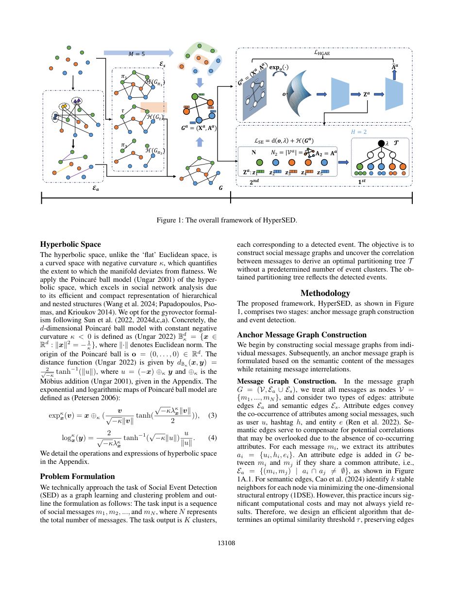
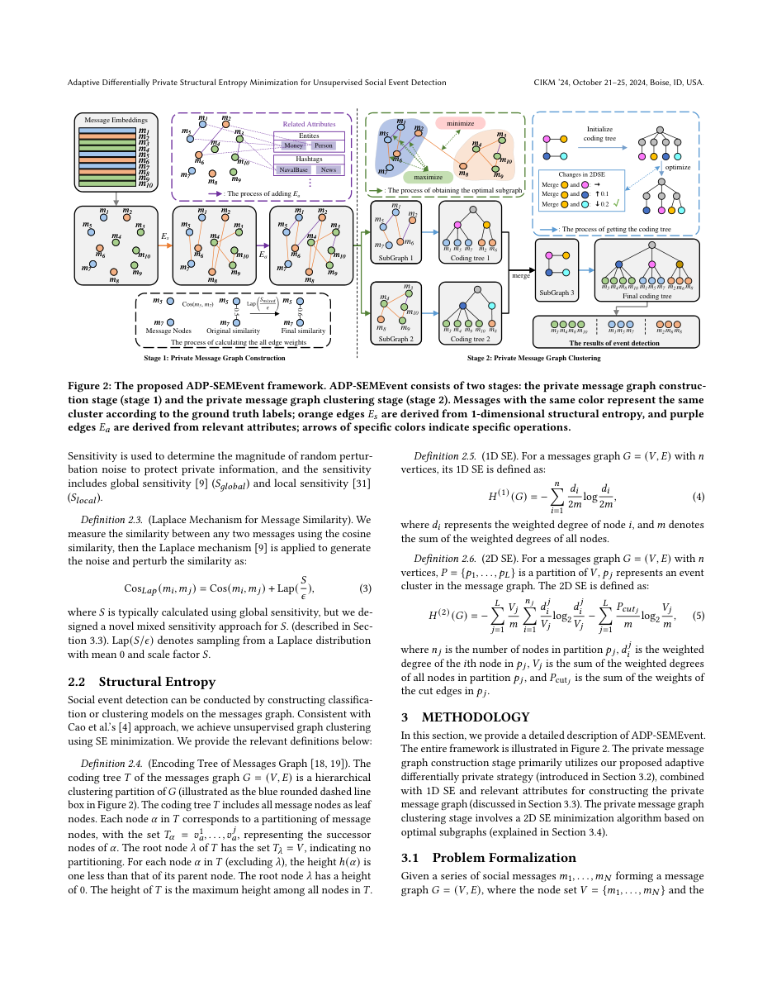
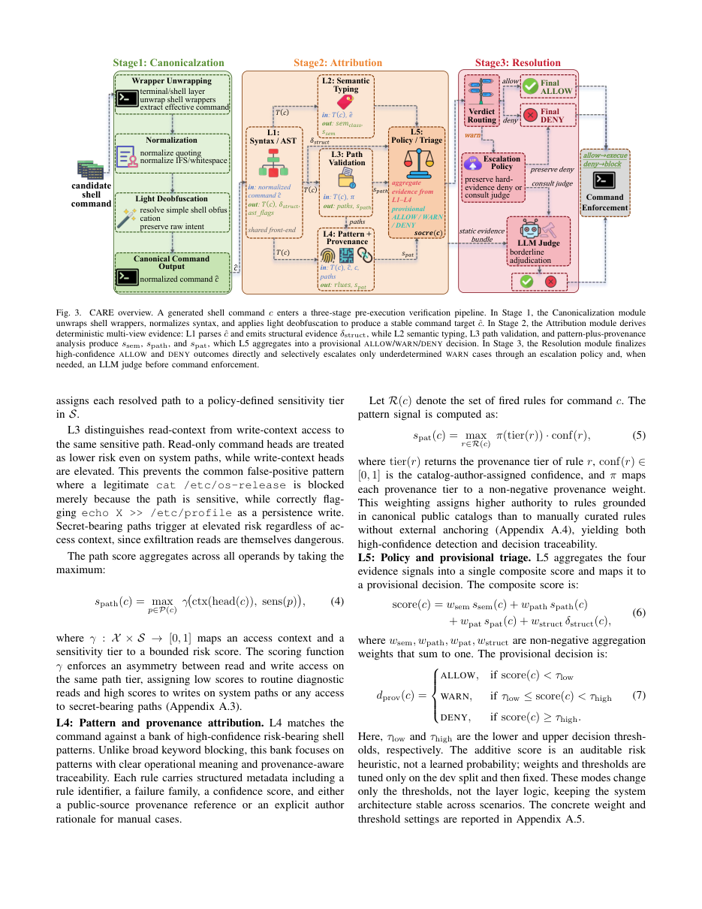

Multimodal event intelligence
Unsupervised and open-world methods that discover emerging social events from heterogeneous, rapidly changing content.
杨志伟
I study reliable intelligence for open-world information environments, with a focus on multimodal social event detection, structural entropy, privacy-preserving learning, and AI agent safety.
Open-world multimodal event understanding
Structural information and graph learning
Privacy, reliability, and agent safety
Methods for finding structure, meaning, and reliable decisions in evolving information streams.
Unsupervised and open-world methods that discover emerging social events from heterogeneous, rapidly changing content.
Information-theoretic graph representations for efficient clustering, incremental learning, and complex relational data.
Privacy-preserving learning and verifiable safeguards for AI systems operating in sensitive or high-risk environments.
WSDM 2026 — Label-Free Contrastive Learning for Open-World Multimodal Social Event Detection.
AAAI 2026 — Structural Entropy Guided Incremental Learning for Open-World Multimodal Social Event Detection.
CARE — Pre-execution command verification for shell-executing LLM agents released as a preprint.
AAAI 2025 — HyperSED studies efficient unsupervised event detection in hyperbolic space.
CIKM 2024 — ADP-SEMEvent combines adaptive differential privacy with structural entropy minimization.
A selection spanning event intelligence, privacy-preserving graph learning, and AI agent safety.

AAAI 2025
HyperSED builds compact semantic anchor graphs and learns geometry-aware representations in hyperbolic space for efficient, unsupervised event discovery.

CIKM 2024
ADP-SEMEvent uses adaptive differential privacy and structural entropy minimization to detect events while protecting sensitive information in social messages.

arXiv 2026
CARE is a shell-specific, static-first verifier that canonicalizes commands, builds deterministic evidence, and escalates only uncertain cases to an LLM judge.
Publication metadata is based on the public Google Scholar profile and publisher records.
The Nineteenth ACM International Conference on Web Search and Data Mining (WSDM)
Proceedings of the AAAI Conference on Artificial Intelligence
arXiv preprint arXiv:2606.15088
arXiv preprint arXiv:2607.21642
Proceedings of the AAAI Conference on Artificial Intelligence
The 33rd ACM International Conference on Information and Knowledge Management (CIKM)
IEEE International Conference on High Performance Computing and Communications (HPCC)
Mathematics, 12(11), 1695
Electronics, 12(7), 1730
International Journal of Environmental Research and Public Health, 20(3), 1945
计算机工程与科学, 45(5), 830
Mathematics, 10(17), 3046
For the latest publication list, citation record, and co-author network, visit the public Google Scholar profile.